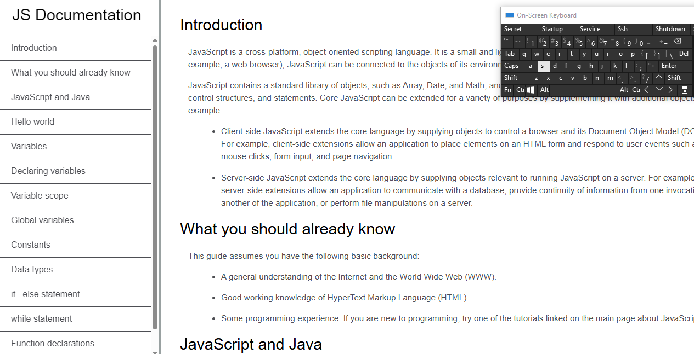
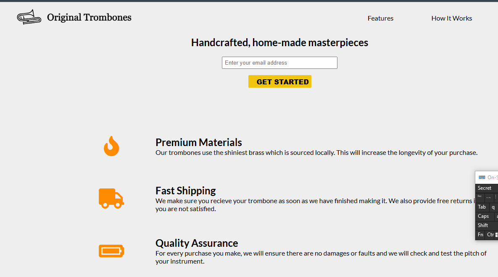
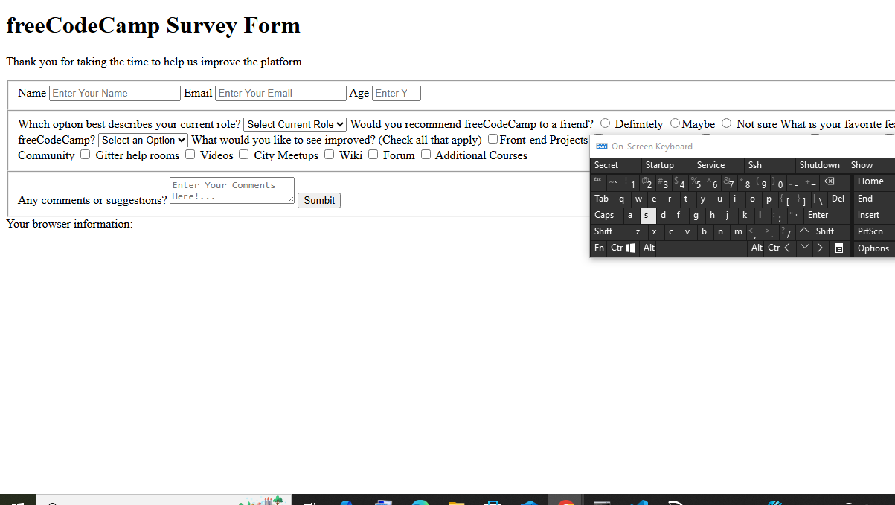

Featured Projects & Work
Web Development Projects

< Tribute Page />
< Technical Documentation />
< Product Landing Page />
< Survey Form />
Phase 2 Collaborative Project
Welcome to my Phase 2 project showcase! This section highlights our collaborative work—a testament to teamwork, technical skills, and innovative thinking in data science and environmental solutions. Our project demonstrates the practical application of data analytics to real-world environmental challenges.
This milestone project includes comprehensive data analysis, visualization, and presentation of environmental data insights. Through collaborative effort, we've created solutions that bridge the gap between environmental science and data-driven decision-making.
Project Video Presentation
Watch our complete project demonstration and findings presentation
Watch on YouTubeProject Highlights
- Data Analysis: Comprehensive analysis using Python and SQL
- Visualization: Interactive dashboards created with Tableau and Power BI
- Team Collaboration: Effective teamwork and project management
- Environmental Focus: Applied data science to environmental challenges
- Presentation: Clear communication of complex data insights
Areas of Expertise
Data Analysis & Visualization
Creating insightful visualizations and interactive dashboards using Tableau, Power BI, and Python to communicate complex environmental data effectively.
Python Programming
Developing automated data pipelines, analysis scripts, and scientific computing solutions for environmental data processing.
Database Management
Designing and querying databases with SQL for efficient environmental data storage, retrieval, and analysis.
Environmental Data Science
Applying data science techniques to environmental monitoring, pollution analysis, and sustainability metrics.